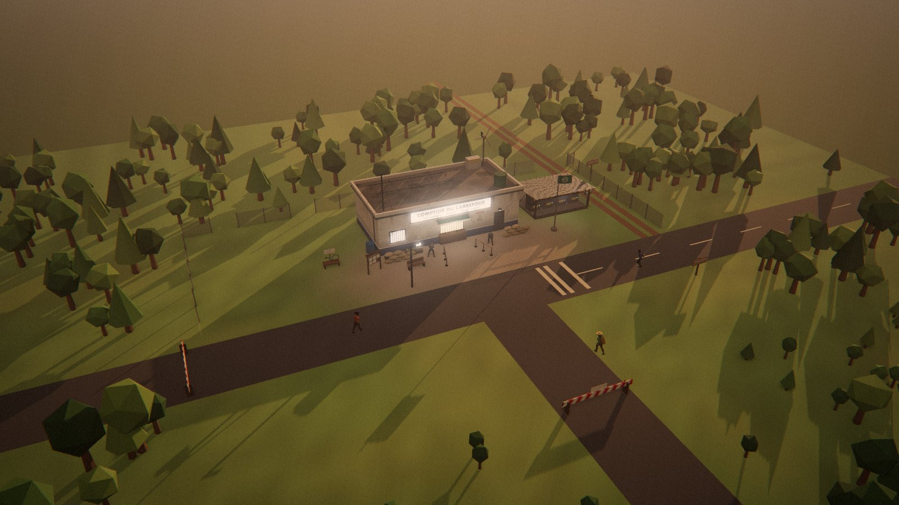
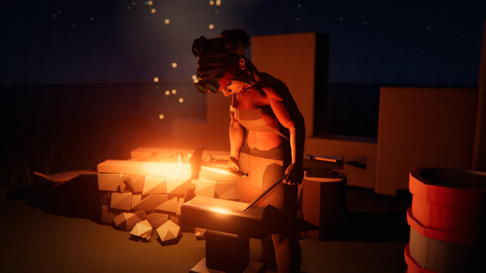
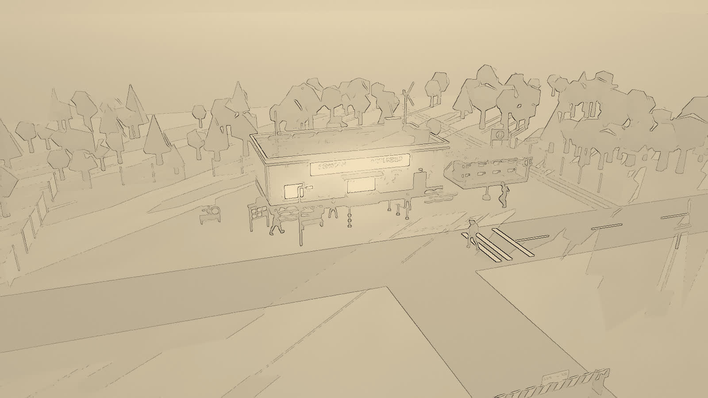

Le réseau ne reviendra pas. L'énergie se compte, se gagne, s'échange.


Le réseau ne reviendra pas. Ici, l'énergie se compte, se gagne et s'échange.

Le réseau ne reviendra pas. Ils disent « bientôt ».
L'énergie se compte, en Wh. Mes mains, elles, ne coûtent rien.
Au Comptoir : je dépose du courant, on me donne des wotts. Ils se vident chaque semaine → les dépenser.
Watty ment. Les Compteurs comptent.